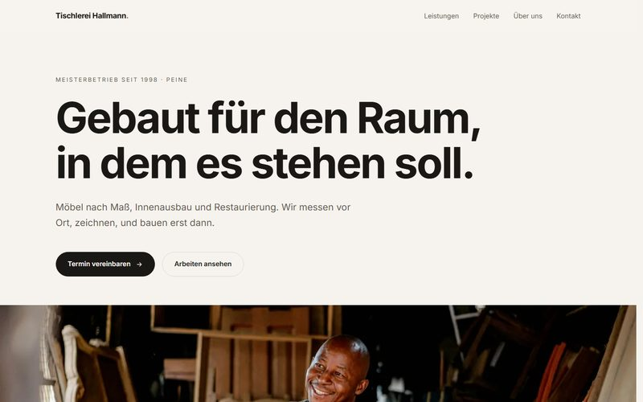

Websites — 2026
Tischlerei Hallmann
Sieben Seiten für einen Tischlerbetrieb: scrollgebundene Bildfolge, strenges Raster, null externe Ressourcen.

Musterprojekt. Betrieb, Anschrift und Inhalte sind frei erfunden, die Umsetzung ist es nicht. Die Fotos stammen von Unsplash.
Überblick
Eine vollständige Unternehmenswebsite als Arbeitsprobe. Der Betrieb ist erfunden, die Umsetzung nicht: sieben Seiten, 27 Fotos, Impressum und Datenschutzerklärung nach deutschem Recht.
Die Aufgabe
Handwerksbetriebe brauchen keine Animation um ihrer selbst willen. Sie brauchen eine Seite, die Arbeit zeigt, schnell lädt und rechtlich sauber ist.
Der Ansatz
Ein Leitmotiv statt vieler Effekte: die Scrollposition wählt das Einzelbild einer siebenteiligen Fotofolge — Aufmaß, Holz, Zuschnitt, Abbund, Schliff, Montage, Übergabe.
Das System
Kein Framework, kein Build-Schritt. Inhalte liegen in einer Datendatei, die Unterseiten erzeugt ein Python-Skript aus gemeinsamen Vorlagen. Bilder werden lokal zugeschnitten und als WebP in mehreren Breiten abgelegt.
Ergebnis
Erster Seitenaufruf 223 KB. 187 interne Links, keiner davon tot. Null Anfragen an fremde Server — maschinell geprüft.